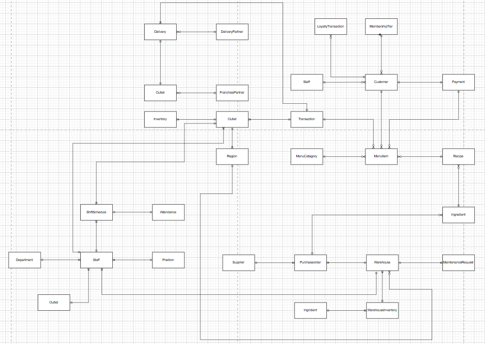

Academic Database Design
Understanding the data behind an order.
A group case study using Solaria to explore how restaurant activities translate into entities, relationships, and database structures.
- Course
- Data and Information Management
- Group
- Group 3
- Database Technology
- Oracle · SQL · PL/SQL
Project at a Glance
Solaria Integrated Restaurant Operations Database
01What
This academic case study proposes an integrated Oracle database for Solaria’s multi-outlet restaurant operations.
02Why
The scenario addresses fragmented sales, stock, purchasing, and customer records across restaurant operations.
03Goal
The aim was to connect restaurant processes and support consistent transaction, inventory, and management records.
04My Role
I designed the conceptual, logical, and physical database models, mapping the ordering journey and receipt details to ERD entities.
05How
The group documented entity relationships, relational schemas, a data dictionary, and Oracle SQL and PL/SQL examples.
06Challenges
The design required consistent relationships across transaction lines, payments, recipes, inventory, and different fulfilment types.
07Target Users
The intended users in this academic scenario are outlet staff, warehouse and purchasing teams, and management.
08Results
The group produced an ERD, relational mappings, a data dictionary, Oracle schema definitions, and PL/SQL examples.
My Design Contribution
From a familiar process to a database model.
I used the ordering journey and the information on a restaurant receipt to understand what each entity represents and why the relationships matter.
- 01 / CONCEPTUAL
Identify the business entities
I traced how menu selection develops into an order, payment, and fulfilment. This helped me identify the entities and relationships behind each activity.
- 02 / LOGICAL
Connect the information
I mapped item names, quantities, unit prices, and totals to linked records. Separating transaction headers from line items clarified how one order can contain several menu items.
- 03 / PHYSICAL
Define the database structure
I translated those relationships into tables, columns, keys, data types, and constraint decisions. The group’s Oracle examples document the proposed implementation structure.
Original Conceptual ERD
Explore the original diagram from the Group 3 report. The report’s later relational and SQL sections expand this conceptual design.

Solaria Restaurant Operations Explore DiagramThe Ordering Journey
Following an order through the schema.
The relationships below use the table names in the report’s Oracle schema definitions.
| Activity | Database structures | What the design records |
|---|---|---|
| Select a menu item | menu_categorymenu_item | Menu categories, item names, current prices, and availability. |
| Record the order | transaction_headertransaction_detail | Order context and separate item lines, linked to the outlet, customer, staff member, and selected menu items. |
| Record payment | paymenttransaction_header | The payment method, amount, time, and reference linked to a transaction. |
| Relate menu items to stock | recipe → recipe_detail → ingredientinventory | Recipe ingredient requirements and ingredient stock held at an outlet. Stock deduction is a proposed processing requirement. |
| Identify fulfilment | transaction_headerdeliverydelivery_partner | Dine-in, takeaway, or delivery as the transaction type; delivery orders can link to courier, address, tracking, and delivery-status records. |
The schema does not define a separate Cart or Basket entity. A transaction marked Pending can illustrate an unfinished order; the document does not establish a persistent basket workflow.
Learning from a Receipt
Recognising entities in everyday information.
I used receipt details to connect familiar business information with the appropriate entities and attributes in the ERD.
| Receipt information | Corresponding fields |
|---|---|
| Outlet identity | outlet.outlet_name, address, phone_number |
| Transaction reference and date | transaction_header.trx_id, trx_date |
| Staff identity | transaction_header.staff_id → staff.full_name |
| Menu item names | transaction_detail.menu_id → menu_item.menu_name |
| Quantity, unit price, and line total | transaction_detail.quantity, unit_price, subtotal |
| Discount and transaction totals | transaction_header.discount_amount, total_amount, net_total |
| Payment information | payment.payment_method, amount, payment_time, reference_code |
These fields could support receipt information. The schema has no dedicated Receipt entity, and the submitted evidence does not demonstrate receipt generation or printing.
Reading the Design
Scope and implementation status.
- Academic context. Solaria is the business case used for this coursework. The material documents the group’s proposed database design.
- Preparation and inventory. Recipe relationships describe ingredient requirements. Recipe-based stock updates and audit procedures are proposed in the report; the supplied material does not establish a complete, tested stock-automation implementation.
- Service and delivery. The schema distinguishes dine-in, takeaway, and delivery transactions. Delivery status refers to courier fulfilment. A separate kitchen queue, cooking status, or dining-table service entity is not defined.
- Evidence. The deliverables are design documents and Oracle SQL/PLSQL examples. Database execution results, a completed APEX application, and measured operational improvements are not documented.
Project Attribution
Group 3: Kennes Jansen, Erwin Rommel Immanuel, Muhammad Arif Fadhilah, Christopher Chandra, and Albert Ciandratana.
My contribution focused on conceptual, logical, and physical database design. The report records the wider group deliverables.